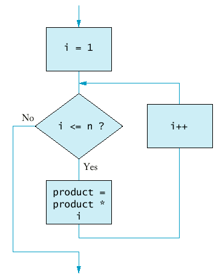

If your status is Single and
if the taxable income is overbut not over the tax is of the amount over $0 $21,450 15% $0 $21,450 $51,900 $3,217.50 + 28% $21,450 $51,900
$11,743 + 31% $51,900
If your status is Married and
if the taxable income is overbut not over the tax is of the amount over $0 $35,800 15% $0 $35,800 $86,500 $5,370.00 + 28% $35,800 $86,500
$19,566.00+ 31% $86,500
if (now.get_hours() == homework.get_hours() &&
now.get_minutes() == homework.get_minutes())
cout << "The homework is due right now!\n";
if (state == "HI" || state == "AK")
shipping_charge = 10.00;
The && and || operators are computed using lazy evaluation.
if (cin.fail() || area < 0) cout << "Input error.\n";
if (r >= 0 && -b / 2 + sqrt(r) >= 0) ...
if (!cin.fail()) quarters = quarters + n;
|
|
|
||||||||||||||||||||||||
| |
|
|
if (!(country == "USA" && state != "AK" && state != "HI"))
shipping_charge = 20.00;
|
not (A and B)
|
is the same as
|
not A or not B
|
|
not (A or B)
|
is the same as
|
not A and not B
|
meansstate != "AK" && state != "HI"
Applying DeMorgan's Law to the original expression yields!(state == "AK") && !(state == "HI")
Finally we have!(state == "AK" || state == "HI")
if (country != "USA" || state == AK" || state == "HI") ...
i = start;
while (i <= end)
{ . . .
i++;
}
for(i = start; i <= end; i++)
int product = 1;
for (int i = 1; i <= n; i++) product = product * i;

|
Syntax 7.1 : for Statement for (initialization_expression; condition; update_expression) statement
|
for(int n = 10; n >= 0; n--) ...
for(x = -10; x <= 10; x = x + 0.5) ...
for(rate = 6; month--; cout << balance) ...